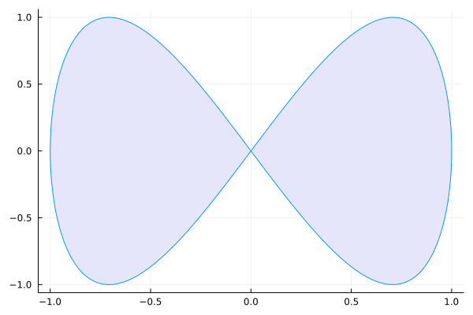
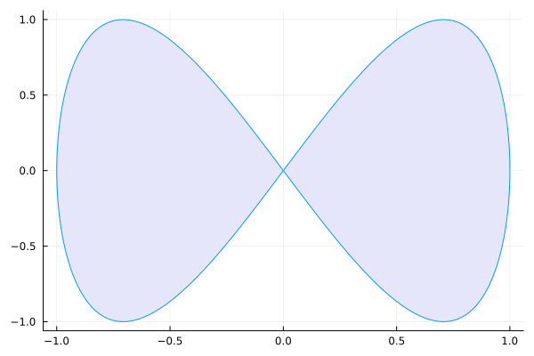
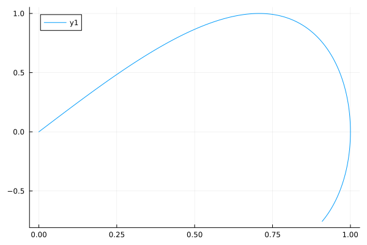
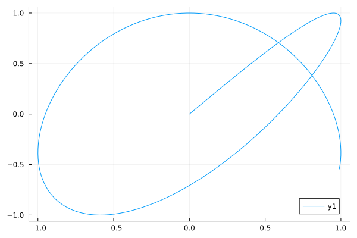
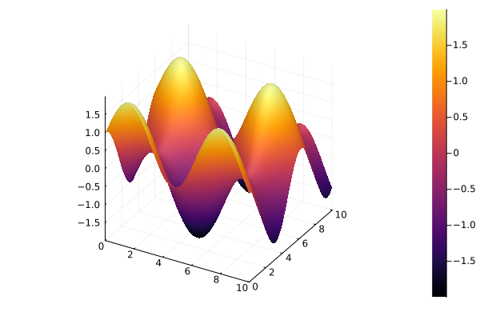
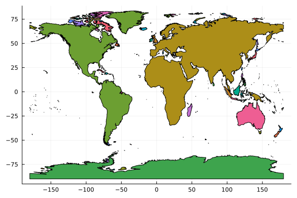
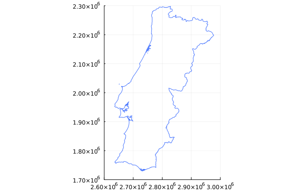

Code
using Plots
plot(sin,
x->sin(2x),
0,
2π,
leg=false,
fill=(0,:lavender))
Plot function pair (x(u), y(u)). See Figure 1 for an example.
using Plots
plot(sin,
x->sin(2x),
0,
2π,
leg=false,
fill=(0,:lavender))
using Plots
display(plot(sin, x -> sin(2x), 0, 2))
display(plot(x -> sin(4x), y -> sin(5y), 0, 2))

using Plots
f(x, y) = sin(x) + cos(y)f (generic function with 1 method)
surface(0:0.1:10, 0:0.1:10, f)
using Plots
f(x, y) = sin(x) + cos(y)f (generic function with 1 method)
surface(0:0.1:10, 0:0.1:10, f)
import Pkg; Pkg.add(["GeoJSON", "HTTP", "Makie"])
using HTTP, GeoJSON, DataFrames
using CairoMakie
using Makie.GeometryBasics
resp = "https://service.pdok.nl/cbs/gebiedsindelingen/2023/wfs/v1_0?request=GetFeature&service=WFS&version=2.0.0&typeName=gemeente_gegeneraliseerd&outputFormat=json" |> HTTP.get
fc = resp.body |> GeoJSON.read
fig = Figure()
ax = Axis(fig[1, 1])
poly!(ax, fc, color = colorant"gray50")
figimport Pkg; Pkg.add(["GeoJSON", "Pipe"])
using Plots, GeoJSON, DataFrames, Pipe
@pipe "https://raw.githubusercontent.com/nvkelso/natural-earth-vector/master/geojson/ne_50m_land.geojson" |>
download(_) |>
GeoJSON.read(_) |>
DataFrame(_) |>
_.geometry |>
plot
import Pkg; Pkg.add(["GeoJSON", "Pipe"])
using Plots, GeoJSON, DataFrames, Pipe
@pipe "https://gisco-services.ec.europa.eu/distribution/v2/countries/geojson/CNTR_BN_01M_2020_3035.geojson" |> download(_) |>
GeoJSON.read(_) |>
DataFrame(_) |>
filter(:CNTR_CODE => n -> n == "PT", _) |>
_.geometry |>
plot(_, ylimits=(1700000, 2300000), xlimits=(2600000, 3000000), aspect_ratio = :equal, color=:royalblue1)
## Hypocycloid
## Lets recreate the gif on the Wiki (https://en.wikipedia.org/wiki/Hypocycloid)
using Plots
r = 11k = 33n = 100100
th = Array(0:2*pi/100:2*pi+2*pi/100) # theta from 0 to 2pi ( + a little extra)101-element Vector{Float64}:
0.0
0.06283185307179587
0.12566370614359174
0.1884955592153876
0.25132741228718347
0.3141592653589793
0.3769911184307752
0.4398229715025711
0.5026548245743669
0.5654866776461628
⋮
5.7805304826052195
5.843362335677016
5.906194188748811
5.969026041820608
6.031857894892403
6.094689747964199
6.157521601035995
6.220353454107791
6.283185307179587X = r*k*cos.(th)101-element Vector{Float64}:
3.0
2.9940801852848145
2.9763441039434335
2.946861752186066
2.9057494833858932
2.8531695488854605
2.7893294576647545
2.7144811573980583
2.628920040131591
2.532983776506045
⋮
2.628920040131591
2.714481157398059
2.7893294576647545
2.8531695488854614
2.9057494833858937
2.946861752186066
2.9763441039434335
2.9940801852848145
3.0Y = r*k*sin.(th)101-element Vector{Float64}:
0.0
0.18837155858794014
0.3759997006929128
0.5621439437571739
0.7460696614945643
0.9270509831248421
1.104373658054034
1.2773378746952182
1.445261022305146
1.60748038493699
⋮
-1.445261022305146
-1.2773378746952166
-1.1043736580540335
-0.9270509831248404
-0.7460696614945634
-0.562143943757174
-0.37599970069291133
-0.1883715585879398
1.929747179611964e-15
anim = @animate for i in 1:n
# initialize plot with 4 series
plt=plot(5,xlim=(-4,4),ylim=(-4,4), c=:red, aspect_ratio=1,legend=false, framestyle=:origin)
# big circle
plot!(plt, X,Y, c=:blue, legend=false)
t = th[1:i]
# the hypocycloid
x = r*(k-1)*cos.(t) + r*cos.((k-1)*t)
y = r*(k-1)*sin.(t) - r*sin.((k-1)*t)
plot!(x,y, c=:red)
# the small circle
xc = r*(k-1)*cos(t[end]) .+ r*cos.(th)
yc = r*(k-1)*sin(t[end]) .+ r*sin.(th)
plot!(xc,yc,c=:black)
# line segment
xl = transpose([r*(k-1)*cos(t[end]) x[end]])
yl = transpose([r*(k-1)*sin(t[end]) y[end]])
plot!(xl,yl,markershape=:circle,markersize=4,c=:black)
scatter!([x[end]],[y[end]],c=:red, markerstrokecolor=:red)
endAnimation("C:\\Users\\jacek\\AppData\\Local\\Temp\\jl_QKunXq", ["000001.png", "000002.png", "000003.png", "000004.png", "000005.png", "000006.png", "000007.png", "000008.png", "000009.png", "000010.png" … "000091.png", "000092.png", "000093.png", "000094.png", "000095.png", "000096.png", "000097.png", "000098.png", "000099.png", "000100.png"])gif(anim)Plots.AnimatedGif("C:\\Users\\jacek\\AppData\\Local\\Temp\\jl_oHI3unKlkR.gif")